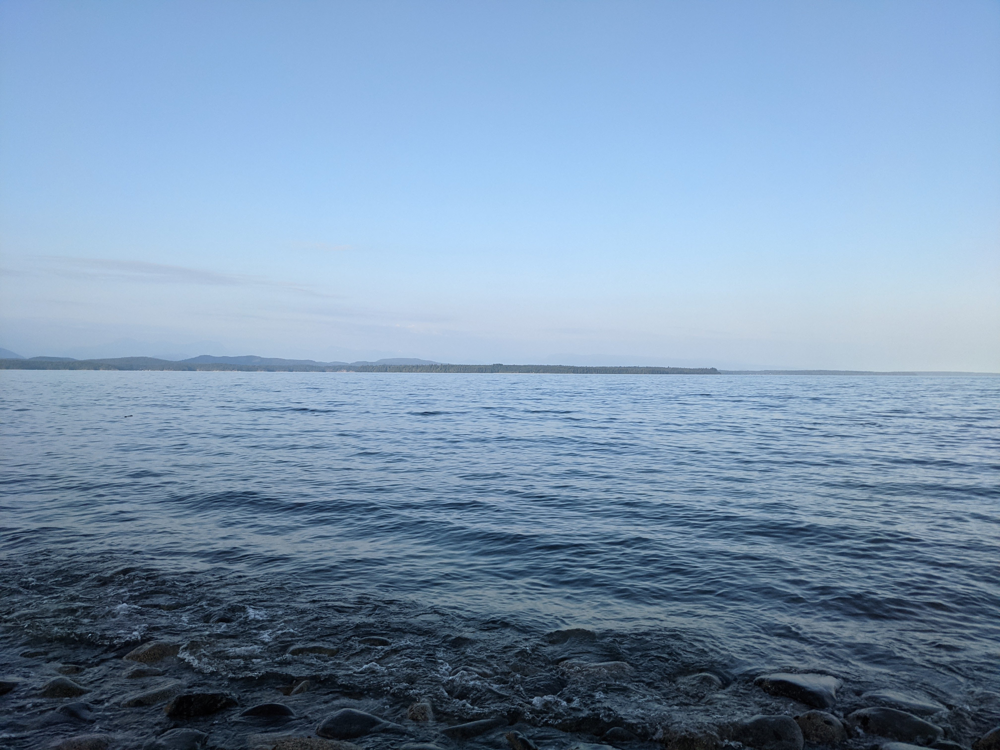
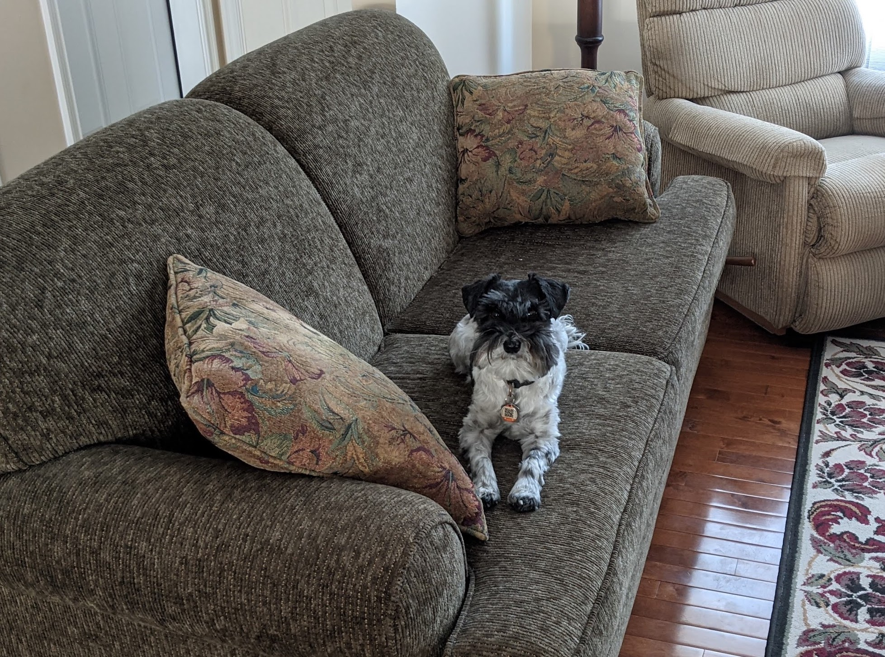

About Me
I'm a fourth year computer science student at the University of Alberta, I transferred to the University of Alberta after a year at University of Lethbridge. I have a particular interest in Software Engineering and development.
Outside of school I love playing the guitar, listening to music, and programming fun throwaway projects with friends.
When not in school or working I love spending my time on the west coast at the ocean or playing games with friends. I also have a Miniature Schnauzer named Oskar (pictured below).
Professional History
In 2022 I completed an 8 month internship at Symend, working on the messaging outreach system, interfacing with twilio and sendgrid to schedule and send information to customers. This messaging backend utilized C# and was part of a broad API design driven product, which gave invaluable experience in understanding how to build an application with independent and scalable components.
Professional Skills

I have experience working in AGILE teams, and am comfortable with the microsoft suite of tools and software. I am a committed and driven developer who can quickly learn and adapt to new development situtations,
looking to expand my knowledge with various development experiences. I am especially interested in backend system development, but am flexible and fully committed to product success in any development setting.
I also have past experience with multiple customer service and teaching jobs, which has allowed me to further develop and refine my communication skills, something I find invaluable in my success and potential in teamwork.